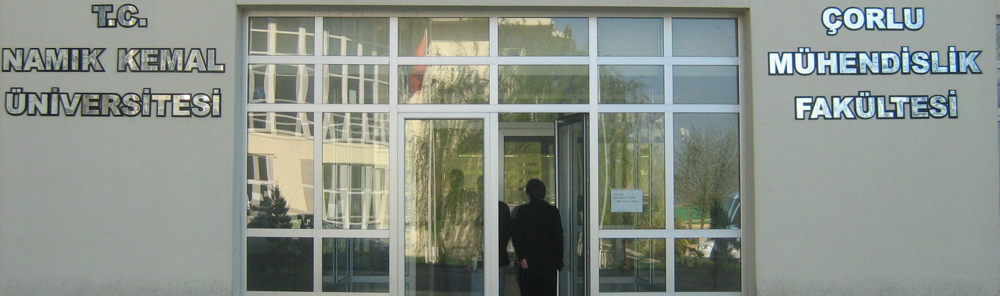

Tekirdağ Namık Kemal Üniversitesi Diploma Yönergesi
BİRİNCİ BÖLÜM Amaç, Kapsam, Dayanak ve Tanımlar
Amaç
MADDE 1- (1) Bu Yönergenin amacı; Tekirdağ Namık Kemal Üniversitesinin eğitimöğretim ve sınav yönetmelikleri uyarınca ön lisans, lisans, lisansüstü, eğitimlerini başarıyla tamamlayan öğrencilere verilecek olan geçici mezuniyet belgesi, diploma, diploma eki ve diğer belgelerin düzenlenmesine ilişkin usul ve esasları düzenlemektir.
Kapsam
MADDE 2- (1) Bu Yönerge, Tekirdağ Namık Kemal Üniversitesinin eğitim‐öğretim ve sınav yönetmelikleri uyarınca ön lisans, lisans, lisansüstü, eğitimlerini başarıyla tamamlayan öğrencilere verilecek olan geçici mezuniyet belgesi, diploma, diploma eki ile diğer belgelerin düzenlenmesine ilişkin usul ve esasları kapsar.
Dayanak
MADDE 3-(1) Bu Yönerge; Tekirdağ Namık Kemal Üniversitesi ön lisans, lisans ve lisansüstü eğitim-öğretim ve sınav yönetmelikleri ile Yükseköğretim Kurulunun ilgili mevzuat hükümlerine dayanılarak hazırlanmıştır.
Tanımlar
MADDE 4- (1) Bu Yönergede geçen;
a) Birim Yönetim Kurulu: Tekirdağ Namık Kemal Üniversitesine bağlı tüm Enstitü, Fakülte, Konservatuar, Yüksekokul ve Meslek Yüksekokullarının Yönetim Kurullarını,
b) Birim: Tekirdağ Namık Kemal Üniversitesine bağlı tüm Enstitü, Fakülte, Konservatuar, Yüksekokul ve Meslek Yüksekokullarını,
c) Daire Başkanlığı: Tekirdağ Namık Kemal Üniversitesi Öğrenci İşleri Daire Başkanlığını,
ç) Dekan: Tekirdağ Namık Kemal Üniversitesi tüm Fakülte Dekanlarını,
d) Müdür: Tekirdağ Namık Kemal Üniversitesi Enstitü, Konservatuvar, Yüksekokul ve Meslek Yüksekokul Müdürlerini,
e) Rektör: Tekirdağ Namık Kemal Üniversitesi Rektörünü,
f) Rektörlük: Tekirdağ Namık Kemal Üniversitesi Rektörlüğünü,
g) Senato: Tekirdağ Namık Kemal Üniversitesi Senatosunu,
ğ) Üniversite: Tekirdağ Namık Kemal Üniversitesini, ifade eder.
İKİNCİ BÖLÜM Geçici Mezuniyet Belgesi, Diploma ve Diğer Belgelerin Hazırlanmasına İlişkin Esaslar
Geçici Mezuniyet Belgesi
MADDE 5- (1) Diploması henüz düzenlenmemiş mezunlara yazılı istekleri halinde mezun olduklarını belirten ve diploma bilgilerini içeren "Geçici Mezuniyet Belgesi" ilgili birim tarafından bir defaya mahsus olmak üzere verilir. Bu belge diploma gerektiren tüm işlemlerde d iploma yerine geçer.
(2) Geçici Mezuniyet Belgesinin ön yüzünde, öğrencinin eğitim - öğretimle ilgili bilgilerine ve kimlik bilgilerine yer verilir, arka yüzü boş bırakılır.
Diplomalar
MADDE 6- (1) Sorumlu olduğu öğretim programındaki tüm gereklilikleri başarıyla yerine getiren öğrencilere ilgili birimin Yönetim Kurulu kararı ile aşağıda tanımlanan diplomalar düzenlenir ve Rektör onayına sunulur.
a) Öğrenim süresi;
Dört yarıyıl (iki yıl) olan Meslek Yüksekokullarından mezun olan öğrenciler için “Ön Lisans Diploması”,
Sekiz yarıyıl (dört yıl) olan Yüksekokullar, Devlet Konservatuvarı ve Fakültelerin lisans programlarını tamamlayanlar için “Lisans Diploması”,
On yarıyıl (beş yıl) olan Veteriner Fakültesini başarı ile tamamlayanlar için “Veteriner Hekim Diploması”,
On yarıyıl (beş yıl) olan Diş Hekimliği Fakültesini başarı ile tamamlayanlar için “Diş Hekimi Diploması”,
Oniki yarıyıl (altı yıl) olan Tıp Fakültesini başarı ile tamamlayanlar için “Tıp Doktoru Diploması”,
Sekiz/On/Oniki yarıyıllık lisans programlarının en az ilk dört yarı yılının bütün derslerinden başarılı olan öğrencilere başvurmaları halinde “Lisans Öğrenimini Tamamlamayan ve Tamamlayamayanların Ön Lisans Diploması Almaları veya
Meslek Yüksekokullarında İntibakları Hakkında Yönetmelik” uyarınca, “Önlisans Diploması”,
Lisansüstü eğitimin tezli yüksek lisans programlarını tamamlayanlar için “Tezli Yüksek
Lisans Diploması”, tezsiz yüksek lisans programlarını tamamlayanlar için “Tezsiz Yüksek Lisans Diploması”, doktora programlarını tamamlayanlar için “Doktora Diploması”, Sanatta Yeterlik programını tamamlayanlar için ise “Sanatta Yeterlik Diploması”,
Teknik Öğretmenler İçin Düzenlenecek Mühendislik Tamamlama Programlarını tamamlayanlar için “Teknik Öğretmenler İçin Düzenlenecek Mühendislik Programlarının Uygulama ve Esas ve Usulleri Yönetmeliği’nin 9. maddesi gereği, “Lisans Diploması” düzenlenerek, diplomalarına “3795 sayılı Kanun uyarınca Mühendislik Tamamlama programını başarı ile tamamlayarak bu diplomayı ve ………. unvanını almaya hak kazanmıştır. ” kaydı konur.
Sağlık Lisans Tamamlama programını tamamlayanlar için “6569 sayılı Kanun uyarınca Sağlık Lisans Tamamlama programını bitirerek mezun olmuş ve bu diplomayı almaya hak kazanmıştır.” Kaydı konur.
İlahiyat Lisans Tamamlama programını tamamlayanlar için “7141 sayılı kanun uyarınca İlahiyat Lisans Tamamlama programında mezun olmuş ve bu diplomayı almaya hak kazanmıştır.” kaydı konur.
Diploma Şekli, Dili ve Hazırlanması
MADDE 7 - (1) Diploma A4 ebadında kağıda basılır. Diplomalarda fonda Üniversite amblemi bulunur. Bunun dışında birimlerin amblemleri yer almaz. (Ek1)
(2) Diplomalar Türkçe ve İngilizce hazırlanır.
(3) Diplomalar ilgili birim tarafından hazırlanarak, Rektörlüğün onayına sunulur. Onaylanan diplomalar Rektörlük soğuk mührü ile mühürlenir ve ilgili birime teslim edilir.
Diplomalarda yer alan Bilgiler
MADDE 8-(1) Hazırlanacak diplomaların ön yüzünde aşağıda belirtilen bilgiler yer alır:
a) Üniversitenin adı
b) Diploma türü (ön lisans, lisans, yüksek lisans, doktora, sanatta yeterlik)
c) Diploma numarası
ç) Mezuniyet tarihi
d) Birim, Bölüm ve Programın adı,
e) Türkiye Cumhuriyeti Kimlik Numarası
f) Öğrencinin adı soyadı
f)Tezsiz Yüksek Lisans Programları mezunlarının diplomalarında “Tezsiz Yüksek Lisans”, Tezli Yüksek Lisans Programları mezunların diplomalarında “Tezli Yüksek Lisans” ibaresi yer alır.
g) Diplomanın sol alt köşesinde Dekanın/Müdürün, sağ alt köşesinde Rektörün adı,
soyadı ve unvanı,
(2) Diplomanın arka yüzünde;
1- Sağlık Bakanlığı ya da İl Sağlık Müdürlüğünce tescil edilecek diplomaların arka yüzünde;
a) Baba ve Ana Adı,
b) Doğum Yeri ve Yılı,
c) Öğrenci Numarası,
ç) T.C. Kimlik Numarası/Yabancı uyruklular için Y.U. numarası,
d) Kayıt Tarihi,
e) Derecesi
f) Düzenlenme Tarihi
g) Diplomayı düzenleyen yetkilinin adı, soyadı ve unvanı,
ı) Tescil alanı bulunur.
2- Tezli yüksek lisans ile doktora ve Sanatta Yeterlik diplomalarına tez danışmanı ve tezin konusu, tezsiz yüksek lisans diplomalarına ise proje danışmanı ve dönem projesi yazılır.
3- Diğer diplomaların arka yüzünde herhangi bir bilgi yer almaz.
Diplomalarda yer Alamayacak Hususlar
MADDE 9- (1) İkinci öğretim/uzaktan öğretim yapılan ön lisans, lisans ve lisansüstü programlarından mezun olanların diplomalarında, ikinci öğretim/uzaktan öğretim programlarından mezun oldukları belirtilmez. Bu bilgiler, öğrenci not döküm belgesi (transkript) içinde yer alır
Diplomalarda unvan yer almaz ancak Yükseköğretim Kurulu Başkanlığı’nın kararları ile belirlenen programlar için diplomalarda unvan yazılır.
Diplomalarda İmza
MADDE 10- (1) Diplomalar, düzenleme tarihinde görevde bulunan Rektör, Dekan/Müdür t arafından imzalanır.
Mezuniyet Tarihi
MADDE 11-(1) Diplomaya yazılacak mezuniyet tarihi,
a) Ön lisans, lisans programında kayıtlı olan öğrencilerin mezuniyet tarihi, ilgili birim Yönetim Kurulunun öğrencinin mezuniyetine karar verdiği tarihtir.
b) Yüksek Lisans ve Doktora/Sanatta Yeterlik diplomalarında ilgili birim Yönetim Kurulunun öğrencinin mezuniyetine karar verdiği tarihtir.
Diploma Defteri
MADDE 12 -(1) Mezuniyetine karar verilen öğrencilere ilişkin bilgilerin yer alacağı diploma defterle rinin formatı (Ek 2)’deki gibidir.
(2) Diploma defterlerinin sayfalarına ardışık sayfa numarası verilir, her sayfası mühürlenir.
Diploma Eki
MADDE 13 -(1) Kayıtlı oldukları programları başarıyla tamamlayarak diploma almaya hak kazanan öğrencilere diploma ile birlikte Diploma Eki (Diploma Supplement) Belgesi verilir. Diploma Eki için ücret alınmaz.
(2) Diploma Eki, yükseköğretim diplomasına yapılan bir ek olup diplomanın akademik ve profesyonel anlamda tanınmasını kolaylaştırır, ancak diplomanın yerini almaz ve uluslararası akademik tanınırlığı garanti etmez.
(3) Diploma Eki diploma ile birlikte verilir ve formatı Avrupa Komisyonu, Avrupa Konseyi ve UNESCO/CEPES tarafından geliştirilen model temel alınır.
Diploma Ekinde mezuniyet tarihi, diploma numarası, alınan derecenin düzeyi, süresi, içeriği ve kullanım alanları; Üniversitenin eğitim-öğretim ve değerlendirme esasları ile ulusal eğitim sistemi hakkında bilgilere yer verilir.
Diploma Eki, Daire Başkanlığı tarafından basılır ve ilgili birim Dekanı/Müdürü tarafından imzalanır.
Diğer Belgeler
MADDE 14-(1) Geçici Mezuniyet Belgesi, Diploma ve Diploma Eki dışında aşağıdaki belgeler verilebilir.
(2) Normal süreleri içinde mezun olan, disiplin cezası almayan ve genel akademik başarı not ortalaması 3.00-3.49 olan öğrencilerin transkriptlerine “Onur Öğrencisi”, ortalaması 3.50 ve üzerinde olan öğrencilerin transkriptlerine ise “Yüksek Onur öğrencisi” ibareleri işlenir,
ÜÇÜNCÜ BÖLÜM Belgelerin Teslimi ve Belgelerin Kaybedilmesinde Yapılacak Esaslar
Diploma, Diploma Eki, Geçici Mezuniyet Belgesi ve Sertifikaların Teslimi
MADDE 15- (1) Diploma, diploma eki, geçici mezuniyet belgesi ve sertifikalar yalnızca hak sahiplerinin kendilerine veya noter onaylı vekaletnamelerini ibraz eden vekillerine teslim edilir, posta yolu ile gönderilmez. Diploma sahibinin yurtdışında bulunması halinde, vereceği vekâletnamenin Türkiye Cumhuriyeti Konsolosluk’larından alınmış olması gerekir. Vefat eden kişinin diploması, “Vukuatlı Nüfus Kayıt Örneği”nin teslim edilmesi koşuluyla isteği halinde birinci derece yakınına verilir. Verilen diplomanın fotokopisi ilgilinin öğrenim dosyasında saklanır.
Geçici Mezuniyet Belgesi verilen öğrenciler diplomalarını almak için bu belgelerin aslını geri vermek zorundadırlar.
Tescil edilmesi zorunlu olan bölümlerin/programların diplomaları/ikinci nüsha (Duplikata) diplomaları; mezunlara verilmeden önce, tescil işlemleri için Sağlık Bakanlığı / İl Sağlık Müdürlüğüne gönderilir.
Diplomanın Kaybedilmesi, Yenilenmesi
MADDE 16- (1) Diplomasını kaybeden veya tahribat nedeniyle yenilemek isteyenlere aşağıda belirtilen şartların yerine getirilmesi durumunda ilgili yönetim kurulu kararıyla ikinci bir nüshası verilebilir. İkinci Nüshanın birden fazla verilmesi durumunda kaçıncı kez verildiği yazılır. Diploma veya sertifikasını kaybeden kişi, başvuru dilekçesi (gerekçeli), iki adet vesikalık fotoğraf ve yüksek tirajlı bir gazetede yayımlanan kayıp ilanı ve geçerli bir kimlik ile mezun olduğu akademik birime başvurur.
(2) Trakya Üniversitesine bağlı iken adı ve bağlantısı değiştirilip Üniversitemize bağlanan akademik birimlerden alınan diplomalar için de yukarıdaki işlemler uygulanır.
(3) Düzenlenen ikinci nüshalarda aslında bulunan aynı numaralar, kayıtlar ve imza sahiplerinin ad ve soyadları yazılır fakat imzalar atılmaz. Ön sağ üst köşesinde kırmızı sabit mürekkeple "İkinci Nüsha" ve “…. Kez” yazılır. Aslında resim varsa sahibinin fotoğrafı yapıştırılarak üzeri soğuk damga ile mühürlenir. Bu şekilde hazırlanan” İkinci Nüsha”nın arkasının sağ alt tarafına o günkü tarih atılır, düzenleme tarihinde görevde bulunan ilgili birim yöneticisi ve Rektör tarafından imzalanır.
Mezuniyetten sonra öğrencinin evlilik nedeniyle veya mahkeme kararıyla adı-soyadı gibi kimlik bilgilerinde ya da nüfus kaydını ilgilendiren diğer bilgilerinde değişiklik olması durumunda, kendi isteği doğrultusunda diploması henüz hazırlanmamış ise yeni bilgilerle düzenlenir, hazırlanmış ve teslim edilmiş ise diplomanın arkasına şerh düşülüp, tarih belirtmek ve gerekli açıklama yazılmak sureti ile düzeltme yapılır ve ilgili birim sekreteri ile Dekanı/Müdürü tarafından imzalanır. Yapılan değişiklik ile ilgili diploma defterine de şerh düşülür. Diplomada kurum tarafından yapılan bir hata varsa yeni diploma düzenlenir. İptal edilen diplomalar, üzerine iptal yazılarak saklanır.
DÖRDÜNCÜ BÖLÜM Çeşitli ve Son Hükümler
Yönergede Hüküm Bulunmayan Haller
MADDE 17-(1) Bu Yönergede hüküm bulunmayan hallerde ilgili diğer mevzuat hükümleri ile Senato kararı uygulanır.
Yürürlükten Kaldırılan Yönerge.
MADDE 18- 22 Nisan 2010 Tarihinde Senato Tarafından Kabul edilen Namık Kemal Üniversitesi Diploma Yönergesi yürürlükten kaldırılmıştır.
Yürürlük
MADDE 19-(1) Bu Yönerge, Tekirdağ Namık Kemal Üniversitesi Senatosu tarafından kabul edildiği tarihte yürürlüğe girer.
Yürütme
MADDE 20-(1) Bu Yönerge hükümlerini Tekirdağ Namık Kemal Üniversitesi Rektör Yürütür.